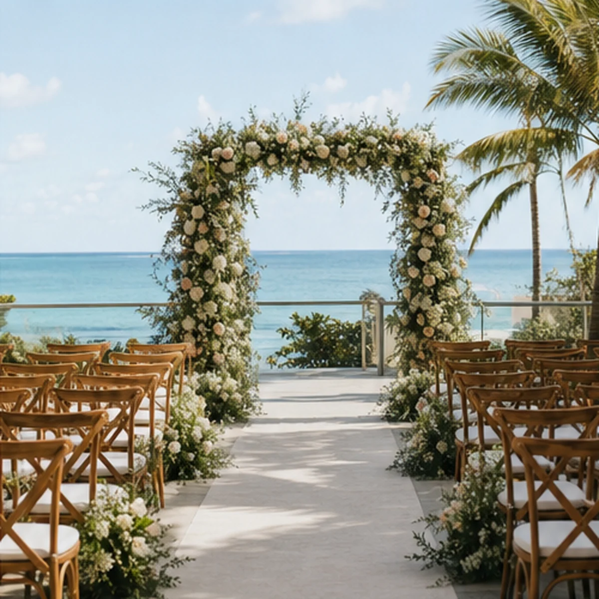
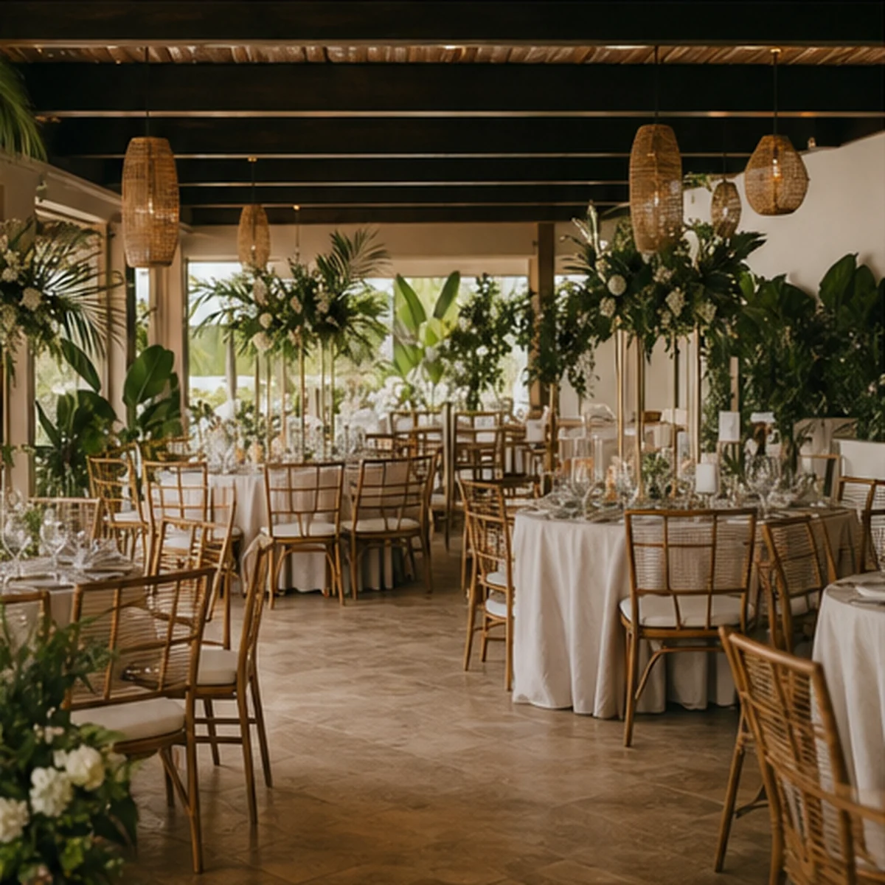
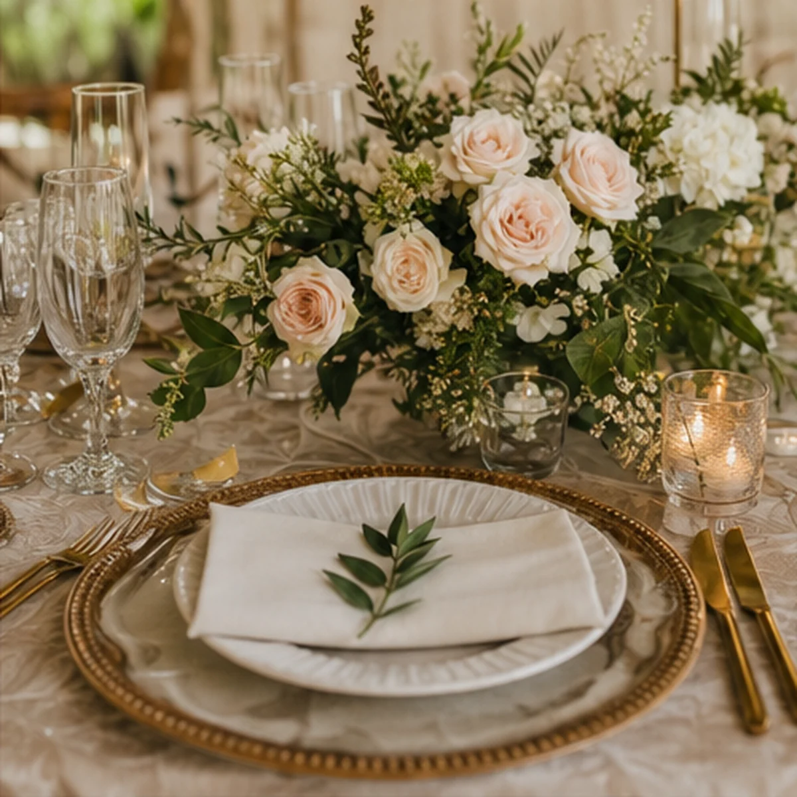
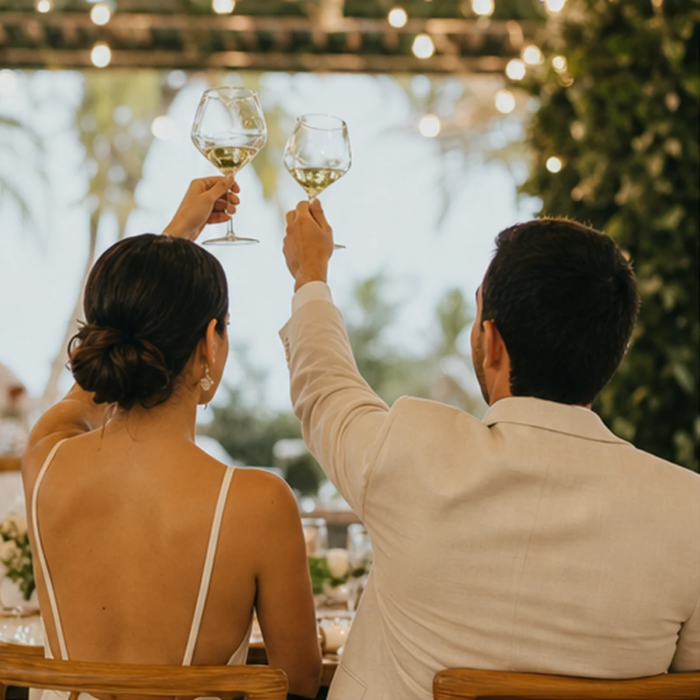
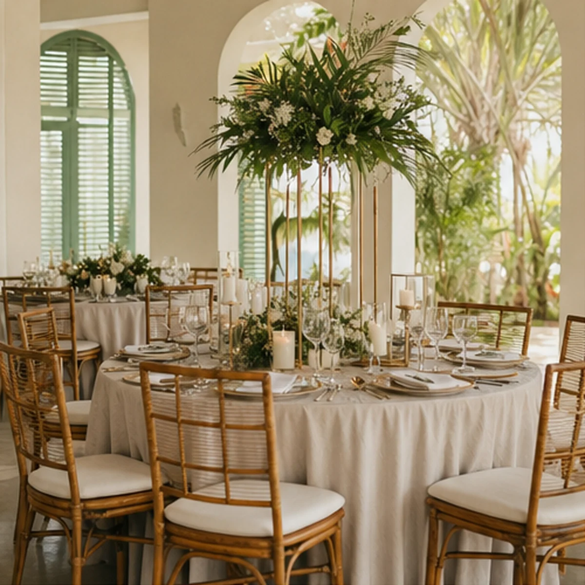

Proyecto DemoDemo Project · De La Isla Studios
GaleríaGallery
Detalles pensados para que cada momento fluyaThoughtful details so every moment can flow





Imágenes creadas para fines de demostración. En un proyecto real, la galería utiliza fotografías aprobadas del negocio y sus eventos. Images created for demonstration purposes. In a real project, the gallery uses approved photography from the business and its events.